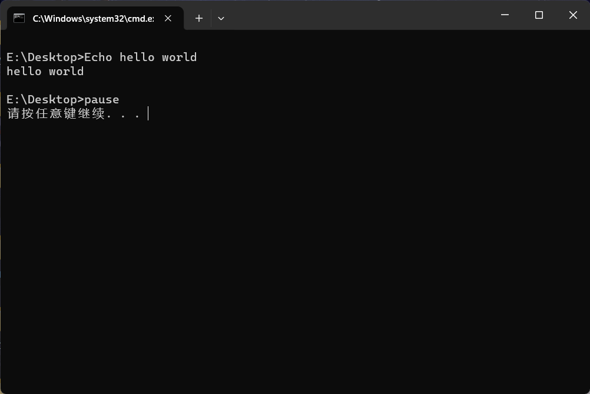
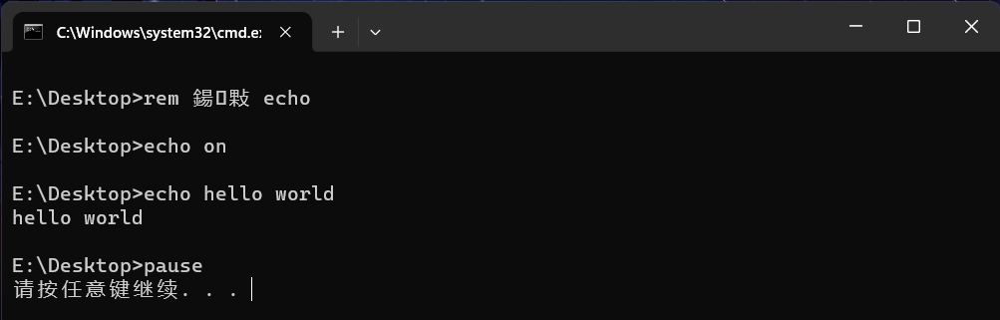
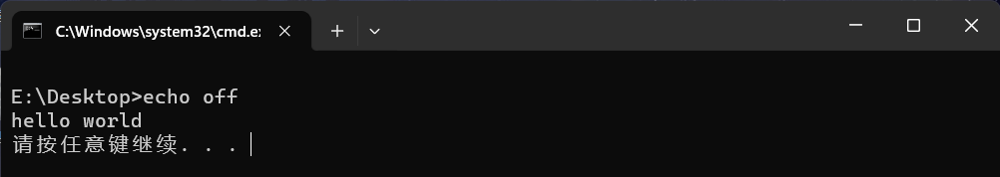
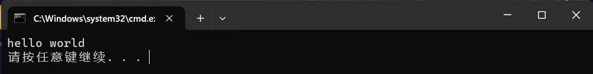
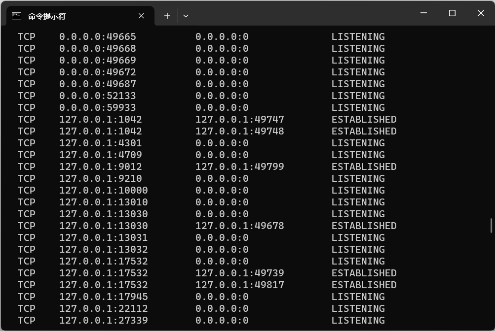
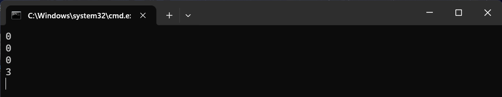

BAT
基本介绍
Batch file programming 是微软操作系统自带原生的开发语言，不需要构建任何环境就可以执行的脚本。Batch file 批处理文件由 cmd.exe 执行。
Hello World
一个基本的 Hello World 程序如下
其中 @echo off 取消路径输出，如果没有这一行，会得到

语法特征
在 Windows 命令行中命令不区分大小写，因此 echo 和 ECho 是同一个命令；然而变量名区分大小写。
注释符
Bat 中的注释符是 :: 或 rem，例如
基本命令
命令格式
批处理命令格式为
命令参数通常以 / 开头。
对于不熟悉的命令，可以直接输入命令，然后回车；或者使用 /? 查看帮助信息。例如
C:\Users\xyf>net /?
此命令的语法是:
NET
[ ACCOUNTS | COMPUTER | CONFIG | CONTINUE | FILE | GROUP | HELP |
HELPMSG | LOCALGROUP | PAUSE | SESSION | SHARE | START |
STATISTICS | STOP | TIME | USE | USER | VIEW ]
其中 [] 表示可选参数。这里我们选择 user 参数，输入
就可以看到当前用户信息。再进一步输入 /? 查看接下来可以使用什么参数
C:\Users\xyf>net user /?
此命令的语法是:
NET USER
[username [password | *] [options]] [/DOMAIN]
username {password | *} /ADD [options] [/DOMAIN]
username [/DELETE] [/DOMAIN]
username [/TIMES:{times | ALL}]
username [/ACTIVE: {YES | NO}]
这里 {} 是必选参数。使用 /help 获得更详细的信息
C:\Users\xyf>net user /help
此命令的语法是:
NET USER
[username [password | *] [options]] [/DOMAIN]
username {password | *} /ADD [options] [/DOMAIN]
username [/DELETE] [/DOMAIN]
username [/TIMES:{times | ALL}]
username [/ACTIVE: {YES | NO}]
NET USER 将创建并修改计算机上的用户帐户。在不使用命令开关的情况下，
将列出计算机的用户帐户。用户帐户信息存储在用户帐户数据库中。
例如我们添加一个新的用户 Admin，密码为 123456
在非管理员模式下命令会失败。
输出命令
使用 echo 命令会输出所有命令，包括它自身。例如
这样所有命令都会输出

而如果关闭 echo 命令
虽然不会输出其它命令，但是仍然会输出它自身

使用 @ 前缀禁止当前命令显示
这样就能得到干净的显示结果

start 命令
通过 start 命令启动命令，不会等待命令执行完毕。首先查看说明
C:\Users\xyf>start /?
启动一个单独的窗口以运行指定的程序或命令。
START ["title"] [/D path] [/I] [/MIN] [/MAX] [/SEPARATE | /SHARED]
[/LOW | /NORMAL | /HIGH | /REALTIME | /ABOVENORMAL | /BELOWNORMAL]
[/NODE <NUMA node>] [/AFFINITY <hex affinity mask>] [/WAIT] [/B]
[/MACHINE <x86|amd64|arm|arm64>][command/program] [parameters]
"title" 在窗口标题栏中显示的标题。
path 启动目录。
B 启动应用程序，但不创建新窗口。
应用程序已忽略 ^C 处理。除非应用程序
启用 ^C 处理，否则 ^Break 是唯一可以中断
该应用程序的方式。
I 新的环境将是传递
给 cmd.exe 的原始环境，而不是当前环境。
MIN 以最小化方式启动窗口。
MAX 以最大化方式启动窗口。
SEPARATE 在单独的内存空间中启动 16 位 Windows 程序。
SHARED 在共享内存空间中启动 16 位 Windows 程序。
LOW 在 IDLE 优先级类中启动应用程序。
NORMAL 在 NORMAL 优先级类中启动应用程序。
HIGH 在 HIGH 优先级类中启动应用程序。
REALTIME 在 REALTIME 优先级类中启动应用程序。
ABOVENORMAL 在 ABOVENORMAL 优先级类中启动应用程序。
BELOWNORMAL 在 BELOWNORMAL 优先级类中启动应用程序。
NODE 将首选非一致性内存结构(NUMA)
节点指定为十进制整数。
AFFINITY 将处理器关联掩码指定为十六进制数字。
进程被限制在这些处理器上运行。
例如我们要启动一个新窗口，标题为 Hello，执行 hello.bat 脚本
如果不希望创建新窗口，使用上面提到的 /B 参数
或者启动输出命令
call 命令
可以在一个 Bat 脚本中调用另一个 Bat 脚本或 exe 程序，会等待程序执行完毕。例如
其中 call 调用的程序可以带参数
所谓调用命令，即可以定义命令并调用。例如
这里 call 调用标签也可以带参数
排序命令
使用 sort 命令对字符串列表排序
任务列表
使用 tasklist 查看本地或远端运行的进程列表。这里主要说明命令使用时如何查看帮助：首先 /? 查看
利用 /FI 筛选 PID 为 12352 的项
这里的格式就是根据帮助写出的。
通过 taskkill 终止任务。例如
计划任务
使用 at (win 10 已启用) 可以制定定时计划，作为替代使用 schtasks 命令。
示例:
==> 在远程机器 "ABC" 上创建计划任务 "doc"，
该机器每小时在 "runasuser" 用户下运行 notepad.exe。
SCHTASKS /Create /S ABC /U user /P password /RU runasuser
/RP runaspassword /SC HOURLY /TN doc /TR notepad
==> 在远程机器 "ABC" 上创建计划任务 "accountant"，
在指定的开始日期和结束日期之间的开始时间和结束时间内，
每隔五分钟运行 calc.exe。
SCHTASKS /Create /S ABC /U domain\user /P password /SC MINUTE
/MO 5 /TN accountant /TR calc.exe /ST 12:00 /ET 14:00
/SD 06/06/2006 /ED 06/06/2006 /RU runasuser /RP userpassword
==> 创建计划任务 "gametime"，在每月的第一个星期天
运行“空当接龙”。
SCHTASKS /Create /SC MONTHLY /MO first /D SUN /TN gametime
/TR c:\windows\system32\freecell
==> 在远程机器 "ABC" 创建计划任务 "report"，
每个星期运行 notepad.exe。
SCHTASKS /Create /S ABC /U user /P password /RU runasuser
/RP runaspassword /SC WEEKLY /TN report /TR notepad.exe
==> 在远程机器 "ABC" 创建计划任务 "logtracker"，
每隔五分钟从指定的开始时间到无结束时间，
运行 notepad.exe。将提示输入 /RP
密码。
SCHTASKS /Create /S ABC /U domain\user /P password /SC MINUTE
/MO 5 /TN logtracker
/TR c:\windows\system32\notepad.exe /ST 18:30
/RU runasuser /RP
==> 创建计划任务 "gaming"，每天从 12:00 点开始到
14:00 点自动结束，运行 freecell.exe。
SCHTASKS /Create /SC DAILY /TN gaming /TR c:\freecell /ST 12:00
/ET 14:00 /K
内置命令
| 命令 | 作用 | 命令 | 作用 |
|---|---|---|---|
| type | 查看文本内容 | cls | 清空显示 |
| date | 修改日期，/T 参数只查找 | time | 修改时间，/T 参数只查找 |
| C: | 切换到 C 盘 | cd | 切换路径 |
| shutdown | 关机 | pause | 暂停 |
| exit | 退出 | title | 设置窗口标题 |
| color | 设置颜色 |
运算符
算术运算
命令模式
通过 set /a 执行算术运算，例如命令行执行
由于不区分大小写，上述两行代码等价。
文本模式
在 bat 脚本中编写输出结果，通过 % 包围表示取值
通过 set 命令对变量赋值。
比较运算
比较运算格式为
其中 /I 可选，表示忽略大小写。比较操作有
| 算符 | 作用 | 算符 | 作用 |
|---|---|---|---|
| equ | 等于 | neq | 不等于 |
| lss | 小于 | leq | 小于等于 |
| gtr | 大于 | geq | 大于等于 |
特殊符号
重定向
有 4 中重定向符号
其中 > 表示将左侧结果覆盖输出到右侧文件；>> 表示追加到右侧文件。类似地
其中 < 表示将右侧结果作为左侧输入。
下面代码输出计算机信息到 log.txt 中
@echo off
echo. > log.txt
echo Log File >> log.txt
echo. >> log.txt
echo User : %username% >> log.txt
Date /t >> log.txt
Time /t >> log.txt
echo. >> log.txt
echo Process Ran by %username% >> log.txt
echo. >> log.txt
tasklist >> log.txt
echo. >> log.txt
echo Network Activities >> log.txt
netstat -s >> log.txt
rem 退出程序
exit
可以只有 . 的行输出一个空格。
多命令
如果需要同时执行多条命令，使用 &,&& 和 || 符号连接：
- 使用
&符号连接，会依次执行所有命令； - 使用
&&符号连接，如果第一个命令错误，则不会执行；否则执行正确的命令； - 使用
||符号连接，如果第一个命令正确，则不会执行第二个命令；否则执行正确的命令；
例如
管道
通过 | 连接两个命令，则左侧命令的输出会作为右侧命令的输入。例如
获取当前目录下所有文件，然后查找所有 .txt 文件。
再例如获取当前网络连接
注意其中的状态：LISTENING 表示正在监听，ESTABLISHED 表示连接。

我们可以筛选出连接的 IP 地址
转义
使用 ^ 表示转义，取消某些特殊字符的含义。例如
这里 ^ 取消了 > 的重定向含义，因此会将后面所有内容作为字符串输出。
转义符号还可以作为续行符号
以 ^ 结尾表示连接下一行。
括号
用括号 () 包围的命令视为一条命令。例如
虽然括号里由两条命令，但是由于被 () 包围，因此被视为一条命令。
通配符
使用 ?,* 两个通配符，其中
?匹配一个字符*匹配任意数量的字符
使用通配符来匹配筛选字符串。
变量
变量赋值
使用 set 进行变量操作。例如
使用 %var% 表示对变量 var 取值
可以通过 /p 参数表示等待外部输入
这里程序会等待用户输入一个值，然后赋值给 var 变量。
预定义变量
环境中存在预定义的变量名，例如
| 变量 | 值 | 变量 | 值 |
|---|---|---|---|
| cd | 当前目录 | date | 当前日期 |
| time | 当前时间 | random | 0-32767 之间的随机数 |
| path | 环境变量 | errorlevel | 上一个命令的返回值，为 0 则执行成功 |
| windir | 系统根目录 | userprofile | 用户目录 |
| %0, %1, %2, ... | 对应输入参数值，%0 表示命令名 | %~dp0 | 批处理文件所在目录 |
| %~x1 | %1 对应的扩展名 | %~n1 | %1 对应的文件名 |
| %~f1 | %1 对应的文件全名 |
外部参数变量
Bat 通过 %n 表示外部输入的参数，例如 test.bat 文件
在命令行执行
这里 5,6 就会作为参数分别传递给 %1 和 %2 。
扩充变量
然而这种方式直接引用变量值，可能会导致路径问题。例如
使用 %1 将会解析为 "C:\Program，这是因为参数直接引用，其中的空格分割了参数值。这时候就需要使用扩充的引用
其中 ~ 表示扩充变量，会保留空格并去掉引号
更多的扩展变量可见下面样例
@echo off
cd . > tmp.txt
rem 这里 tmp.txt 作为参数传入
call :sub tmp.txt
:sub
echo remove "": %~1
echo expand to complete path: %~f1
echo expand to driver: %~d1
echo expand to path: %~p1
echo expand to extension: %~x1
echo expand to attribute: %~a1
echo expand to time: %~t1
echo expand to size of file: %~z1
echo expand to path with driver: %~dp1
echo expand to filename and extension: %~nx1
pause
偏移变量
使用 shift 对传入参数变量进行偏移，例如
表示从 %1 开始，后面所有 %n 向前偏移，即 %1 移动到 %0，%2 移动到 %1，以此类推。
检查变量
使用 defined 检查变量是否定义
局部变量
使用 setlocal 进行局部设置，以 endlocal 结束
变量延迟
在执行同一条命令时，变量的读取会存在延迟。例如
如果要实现变量立即读取，就需要设置延迟
用 ! 替代 % 来包围变量。
字符串变量
替换操作
可以对字符串内容进行替换
set str=hello hello
echo %str%
rem 将 hello hello 中的 llo 替换为 abc 并赋值给 str
set str=%str:llo=abc%
echo %str%
截取操作
还可以截取指定范围的部分
@echo off
set a="helloworld"
rem 从第三个字符 e 开始（注意第一个字符是 " ），截取 5 个字符
set b=%a:~2,5%
echo %b%
rem 从倒数第 5 个字符开始截取
set b=%a:~-5%
echo %b%
rem 从倒数第 5 个字符开始，向前截取 2 个字符
set b=%a:~-5,-2%
echo %b%
pause
查找比较
使用 find 查找字符串，fc 比较两个文件的区别
如果需要更复杂的匹配，例如正则表达式匹配，就需要使用 findstr
rem 在文件 x.y 中寻找 "hello" 或 "there"
FINDSTR "hello there" x.y
rem 在文件 x.y 中寻找 "hello there"
FINDSTR /C:"hello there" x.y
文件操作
目录浏览
使用 dir 查看目录信息。例如
E:\Desktop>dir /?
显示目录中的文件和子目录列表。
DIR [drive:][path][filename] [/A[[:]attributes]] [/B] [/C] [/D] [/L] [/N]
[/O[[:]sortorder]] [/P] [/Q] [/R] [/S] [/T[[:]timefield]] [/W] [/X] [/4]
[drive:][path][filename]
指定要列出的驱动器、目录和/或文件。
/A 显示具有指定属性的文件。
属性 D 目录 R 只读文件
H 隐藏文件 A 准备存档的文件
S 系统文件 I 无内容索引文件
L 重新分析点 O 脱机文件
- 表示“否”的前缀
我们要选取所有目录文件，就应该使用
其中 /A 和 D 分别是参数和属性。
目录操作
通过 mkdir (简写为 md) 创建目录，例如创建嵌套目录
通过 rmdir (简写为 rd) 删除目录
这样只能删除空目录，如果需要删除非空目录，需要指定
切换路径
使用 pushd 和 popd 切换路径
创建文件
使用重定向操作来创建空文件
由于 cd . 返回值为空，因此这里就创建了一个空文件。
检测文件
使用 exist 检查文件是否存在，例如
获取路径
使用变量 ~dp0 获得当前执行脚本所在的路径
重命名
使用 ren 对文件重命名
拷贝剪切
使用 copy (简写为 cp) 命令将指定文件复制到指定路径
用 + 连接来赋值多个文件内容
使用 copy 还可以将屏幕输入的内容存放到指定文件中。例如
执行命令后输入的内容会存放到 test.bat 中，使用 Ctrl + c 退出。
使用 move (简写为 mv) 命令将指定文件移动到指定路径
并且还可以重命名
这样就实现了重命名。
删除文件
使用 del 命令删除文件
指定文件时可以使用通配符 * 进行任意匹配。例如
删除所有 txt 文件。
快捷方式
创建指定文件的快捷方式
@echo off
set shortcutname=%~n1.url
echo [InternetShortcut] > %shortcutname%
echo URL=%~f1 >> %shortcutname%
echo IconIndex=1 >> %shortcutname%
echo IconFile=%windir%\system32\shell32.dll >> %shortcutname%
pause
基本语法
条件判断
条件格式为
一个简单示例如下：
注意赋值和比较操作不能有空格。
使用 exist 判断文件是否存在
条件格式如果需要换行，要以 ( 结尾
循环遍历
遍历目录
循环格式样例为
@echo off
rem 这两种写法等价
for %%a in (www,hello,world) do echo %%a
for %%a in (www.hello.world) do echo %%a
for /d %%a in (*) do echo %%a
for /d %%a in (*) do if %%a==gitee mkdir test
rem 输出到空设备，即不显示最后一段文字
pause > nul
其中 /d 表示目录，%%a 保存目录元素，(*) 表示所有元素的列表。注意 %%a 这里只能使用单一字母变量。
根据
/?提示，在命令行中使用%a保存变量，在批处理脚本中应当使用%%a保存变量。
遍历文件
循环格式样例为
其中 /r 表示递归查询，%%v 保存文件元素，(*.md) 表示所有 md 文件的列表。
遍历数字
循环格式样例为
@echo off
rem 使用 %1 传入参数，与 %%v 拼接得到 IP 地址
for /L %%v in (1,1,20) do ping %1.%%v
rem 输出到空设备，即不显示最后一段文字
pause > nul
其中 /L 表示循环计数器，(start,step,end) 为列表生成格式。
遍历文件内容
循环格式样例为
变量自增
在循环时可能需要使用变量自增，例如
但是实际执行会得到

这是因为 () 内使用 %n% 时查找到的是外部环境变量 n 的值，而循环执行完成后，n 的值才被改变，因此最后的输出正确。
要实现变量自增，需要开启变量延迟，并且将需要延迟的变量用 ! 包围。例如
@echo off
set n=0
setlocal enabledelayedexpansion
for %%i in (1,1,10) do (
set /a n+=1
echo !n!
)
echo %n%
pause > nul
FOR 变量
for 语法中存在预定义的变量
| 变量 | 作用 | 变量 | 作用 |
|---|---|---|---|
~i |
删除引号 | %~fi |
文件路径名 |
%~di |
文件所在驱动器号 | %~pi |
文件路径 |
%~ni |
文件名 | %~xi |
文件扩展名 |
%~si |
文件路径 | %~ti |
文件日期 |
%~zi |
显示文件大小 |
例如删除引号
其中 ~i 就是删除了引号的结果。
复杂语法
利用 for 语法格式
FOR /F ["options"] %variable IN (file-set) DO command [command-parameters]
FOR /F ["options"] %variable IN ("string") DO command [command-parameters]
FOR /F ["options"] %variable IN ('command') DO command [command-parameters]
例如
它会分析 myfile.txt 中的每一行，
eol=;忽略以分号打头的行；delims= ,表示用逗号和空格分割成几个部分；tokens=2,3*将每行第二个和第三个部分传递给 for 函数体，最后*传递给第三个变量；- 定义
%%i保存第二个部分，程序会自动生成%%j,%%k来保存第三个部分和*对应的剩余部分；
我们进一步解释 tokens 参数：
rem 读取第 2,5,6 部分，存放到 i,j,k 中
FOR /F "tokens=2,5,6" %%i in ("myfile.txt") do @echo %%i %%j %%k
rem 读取第 2,5,6-8,9 部分，存放到 i,j,k,l,m,n 中
FOR /F "tokens=2,5,6-8,9 delims=," %%i in ("a,b,c,d,e,f,g,h,i,j,k") do @echo %%i %%j %%k %%l %%m %%n
其中隐式变量名必须依次选择，最多不超过 z；而 6-8 会生成 3 个变量存放对应的 3 个部分。
在读取文件时，使用 skip 跳过指定的行
循环重命名
利用这一语法格式，可以用当前日期来重命名文件
@echo off
rem %~x1 获得 %1 参数的扩展名
set extension=%~x1
for /F "tokens=1-3 delims=/- " %%A in ('date/t') do set date=%%A%%B%%C
ren %1 %date%%extension%
pause
其中 tokens=1-3 指定获取第 1,2,3 部分，保存在 %%A,%%B,%%C 中。通过命令 data/t 会获得
分割后 %%A,%%B,%%C 就分别保存 year,month,day 值。
命令跳转
使用 goto 可以跳转到指定位置执行。例如
上述代码将会反复创建目录并进入目录，无限循环。
goto 指定的标识符不包含
,:，并且长度不超过 8 个字符。超过 8 个字符就只识别这 8 个字符。
借助跳转可以实现较为复杂的交互操作
@echo off
echo 1.show ip address
echo 2.show network link
echo 3.show director
echo 4.d
:first
echo Enter your option:
rem 这里 opt= 执行后可以输入一个值，存放到 opt 中
set /p opt=
if %opt%==1 goto one
if %opt%==2 goto two
if %opt%==3 goto three
if %opt%==4 goto four
echo Invalid option
goto first
:one
ipconfig /all
pause > nul
rem 立即退出，否则会继续向下执行
exit
:two
netstat -an
pause > nul
exit
:three
dir
pause > nul
exit
:four
echo your choice is four
pause > nul
exit
网络操作
连通检测
使用 ping 命令检查与指定 IP 地址的连通性
路由信息查看
使用 tracert 检测与指定地址之间需要经过多少个网络设备连接
网络适配器
使用 ipconfig 查看网络配置